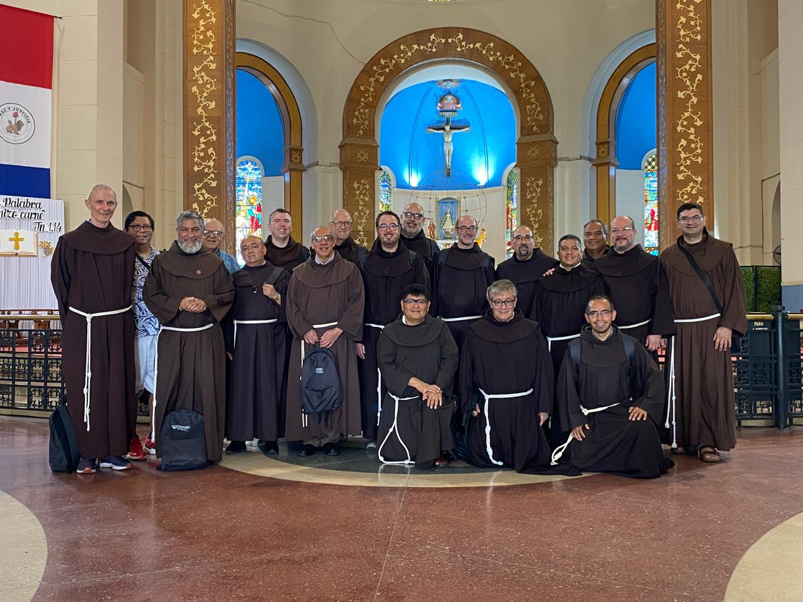

«La cena la porti tu 2026»
Come negli anni precedenti, ci siamo proposti di raggiungere 1.000 contributi entro il 31 dicembre
Leggi la notizia
Ultima ora
Non ci sono notizie in questa lingua.
Come negli anni precedenti, ci siamo proposti di raggiungere 1.000 contributi entro il 31 dicembre
Leggi la notizia
È stata posta la prima pietra della cappella del Buon Pastore in memoria di papa Francesco
Leggi la notizia


Revista Tierra Santa
La Revista Tierra Santa appartiene ai francescani dell’Ordine dei Frati Minori, e precisamente alla Custodia di Terra Santa in Spagna (Centro di Terra Santa). Il suo fine principale è aiutare la Terra Santa. Altri fini sono far conoscere la Terra di Gesù attraverso la rivista, la pubblicazione di opere che ne divulghino tutti gli aspetti e la formazione biblica, teologica, storica e archeologica mediante corsi, conferenze e giornate di studio che permettano ai partecipanti di approfondire la conoscenza di tutto ciò che riguarda la figura di Nostro Signore e la Terra in cui si incarnò e visse fino alla sua Risurrezione.
La rivista Tierra Santa, che esce ogni due mesi, è lo strumento che fa conoscere in lingua spagnola lo spirito francescano della Terra Santa, offrendo informazioni di attualità, storiche, archeologiche e bibliche sui Luoghi Santi.


Responsabile della Rivista
Sacerdote francescano della diocesi di Madrid. Ha studiato Teologia presso la Facoltà di Teologia del Nord della Spagna (Burgos), ha conseguito la Licenza in Teologia dogmatica all’Università Pontificia di Salamanca, il Dottorato in Teologia dogmatica all’Università Ecclesiastica San Dámaso (Madrid) e la Licenza in Teologia fondamentale all’Istituto Teologico di Murcia (Pontificia Università Antonianum), oltre ad altri studi a Gerusalemme (esegesi e archeologia) e a Madrid (vita consacrata).
Attualmente è professore all’Università Ecclesiastica San Dámaso e all’Istituto Teologico di Murcia, nonché Presidente dei Commissari di Terra Santa in Spagna e Portogallo e Rappresentante legale del Custode di Terra Santa in Spagna.

Direttrice
Laureata in Giornalismo, diplomata in Alti Studi Internazionali, con ampie competenze di Community Manager e Social Media. Ha più di 15 anni di esperienza in diversi incarichi di comunicazione, sia in multinazionali come Repsol, sia in istituzioni come il Ministero della Difesa, in enti privati come l’Instituto de Seguridad Global o in fondazioni come CODESPA.
Ha inoltre insegnato Comunicazione all’Università Complutense di Madrid e ha collaborato scrivendo articoli per diverse riviste specializzate.
Comitato di redazione
Dottore in Teologia presso l’Università Ecclesiastica San Dámaso (Madrid), dove è professoressa aggiunta, e professoressa associata della Facoltà di Letteratura Cristiana e Classica – San Justino (UESD). Ambiti di ricerca: Archeologia biblica, Iconografia comparata, studi biblici, ebraismo e le sue lingue. Insegna aramaico ed ebraico ed è anche docente invitata dell’Università Francisco de Vitoria, con il corso di Storia delle Civiltà.
Ha una lunga esperienza in archeologia: dal 1996 è archeologa a Tel Hazor (Galilea, Israele) e dal 2012 nella Città di Davide, a Gerusalemme. Collabora con National Geographic España e altre riviste scientifiche.

Segretaria
María José Villegas Villena è nata a Madrid, è sposata e madre di sei figli. Si è laureata in Psicologia, con specializzazione in Psicologia dello sviluppo, all’Università Complutense di Madrid. Fa parte del Cammino Neocatecumenale, dal quale ha ricevuto il suo amore per la Chiesa e per la Terra Santa come sorgente della Fede da cui nascono le radici del cristianesimo. Dal 1999 è andata molte volte in pellegrinaggio in Israele, scoprendo che è il luogo che Dio scelse per farsi carne e salvare gli uomini.
Emeroteca · Dal 1921
819 numeri · 1921 – 2025
Tutti i numeri dal 1921, gratis e completi
Scegli da dove cominciare.
Scorri per esplorare
o usa le frecce ← →
Abbonamenti
Abbonamento come donatore Amico, 50 € / anno.
Con questo abbonamento partecipa direttamente all’estrazione annuale di viaggi in Terra Santa.
AbbonatiAbbonamento come donatore Benefattore, 80 € / anno.
Con questo abbonamento partecipa direttamente all’estrazione annuale di viaggi in Terra Santa.
AbbonatiAbbonamento ordinario, 30 € / anno. Anche in PDF: 20 € / anno.
Può partecipare all’estrazione annuale di viaggi in Terra Santa (+12,00 €).
AbbonatiAbbonamento come donatore Protettore, 150 € / anno.
Con questo abbonamento partecipa direttamente all’estrazione annuale di viaggi in Terra Santa.
Abbonati